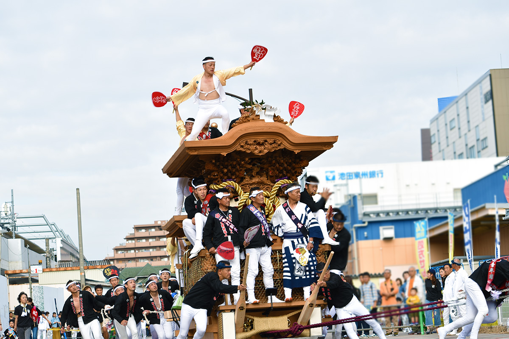
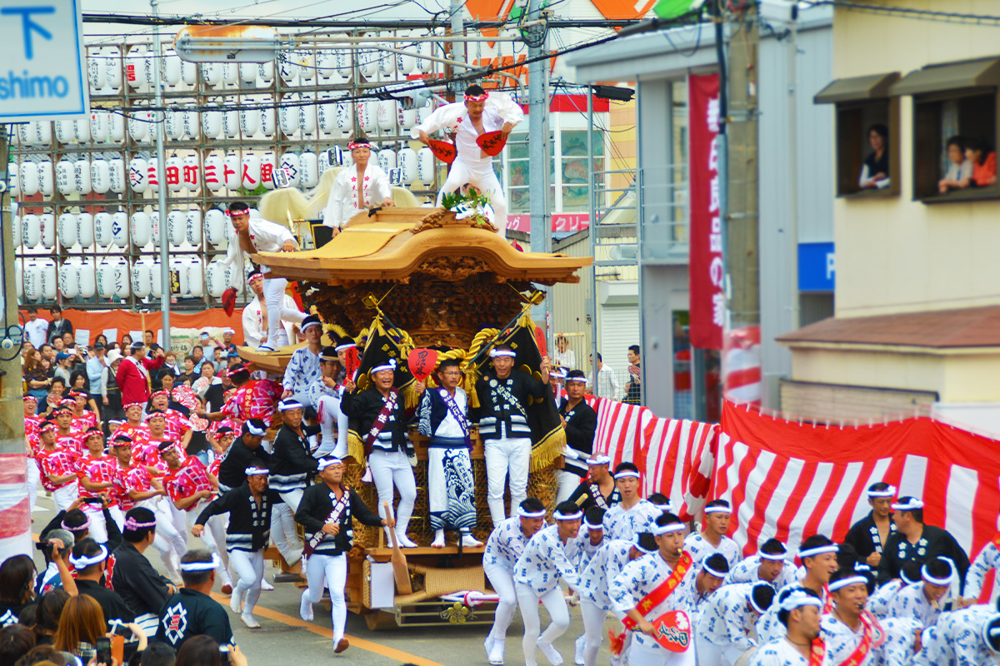
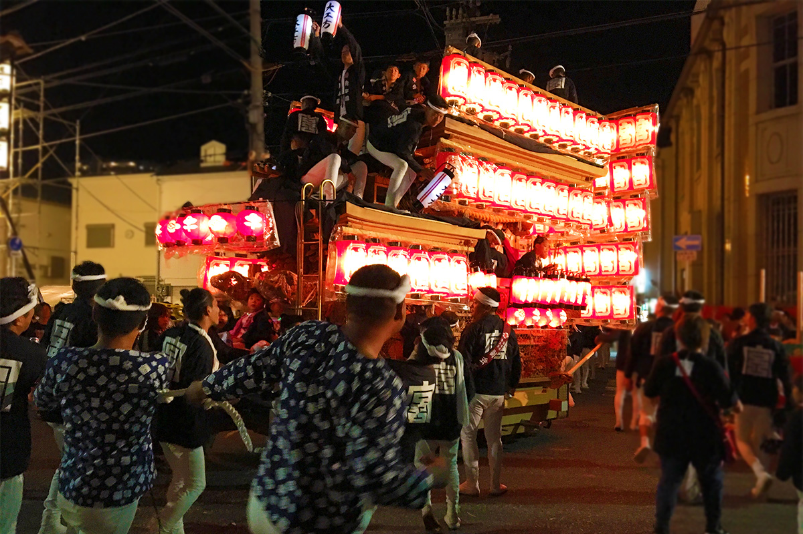
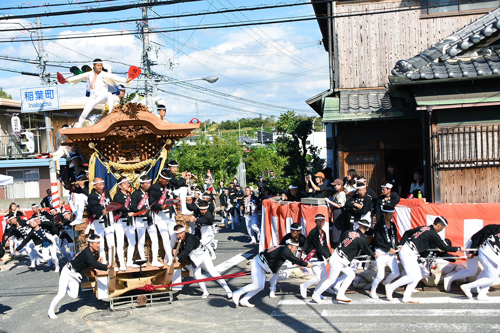
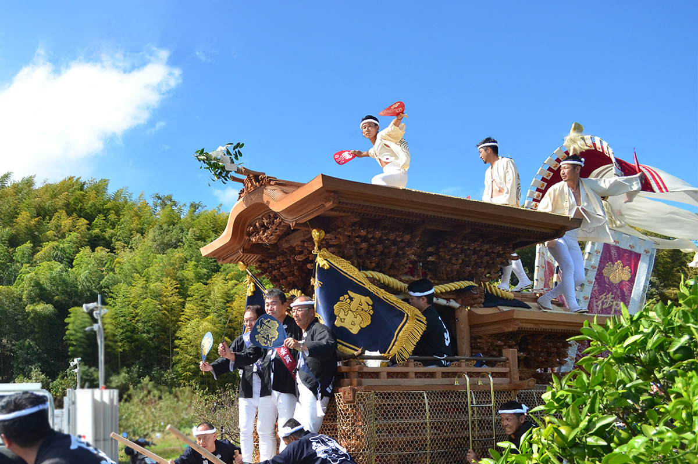
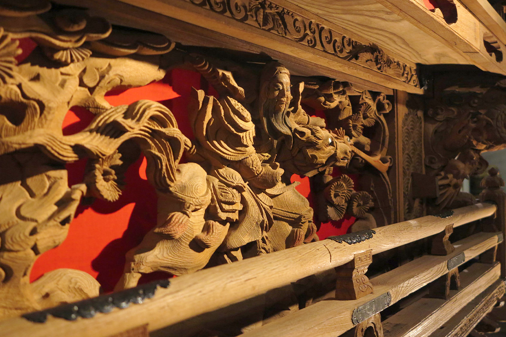
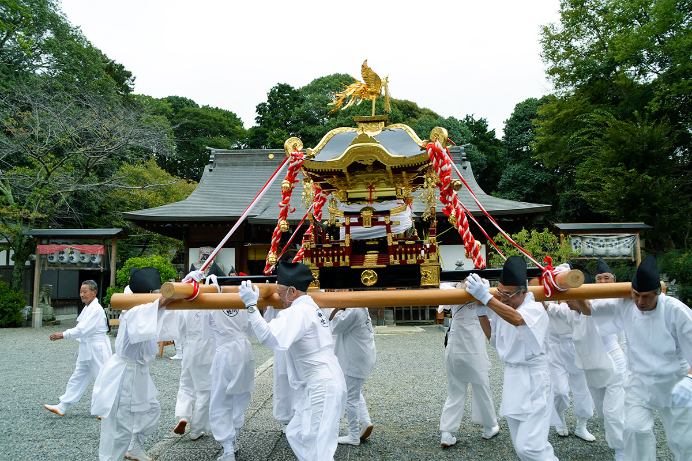
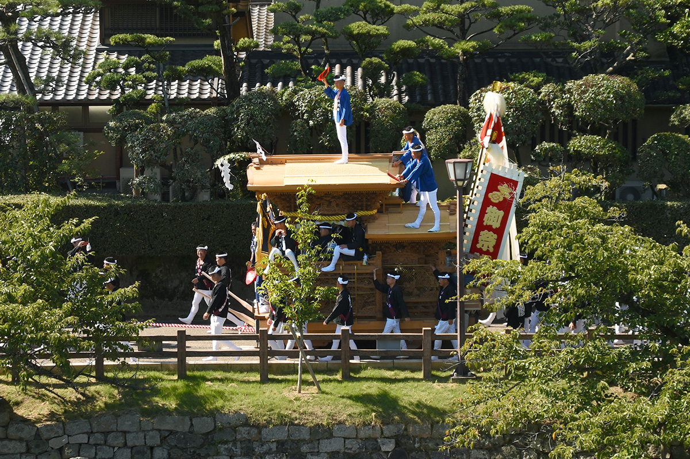
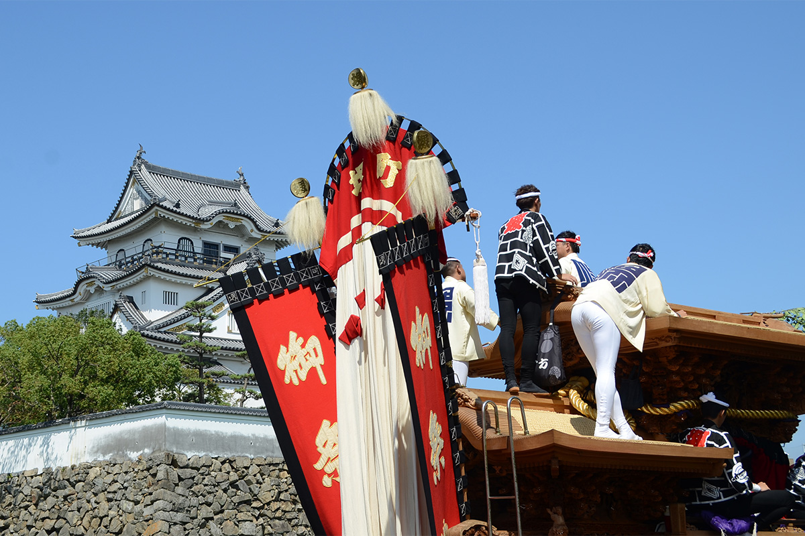

Префектура Осака · Кисивада · праздник
Кисивада-дандзири: праздник, где деревянные колесницы берут поворот на полном ходу

Праздники в Японии веками были частью повседневной жизни, и на многие из них может прийти любой путешественник. Кисивада-дандзири на юге префектуры Осака самый стремительный из них: огромные деревянные колесницы несутся по улицам и поворачивают, не сбавляя скорости.
Праздник
Колесница, которая не тормозит
Во многих городах Японии по улицам возят большие праздничные колесницы. На знаменитом Гион-мацури в Киото они плывут медленно и торжественно, а кое-где колесницы сталкивают друг с другом. Город Кисивада на юге префектуры Осака прославился другим: здесь огромную резную колесницу, дандзири, тянут бегом.

Самое захватывающее происходит на перекрёстках. Колесница входит в поворот, почти не замедляясь, и разворачивается под прямым углом. Этот манёвр называют «яримаваси». Людей, которые держат канаты, будто вот-вот отбросит в сторону, но они изо всех сил цепляются за колесницу и бегут дальше. Ради этого зрелища в Кисиваду и едут.
История
От святилища в замке до праздника всего города
Начало празднику, как считается, положил в 1703 году Нагаясу Окабэ, правитель княжества Кисивада. Чтобы вымолить богатый урожай, он перенёс частицу божества из святилища Фусими-Инари в Киото в третий двор своего замка и устроил по этому случаю праздник.
Поначалу всё было очень скромно. В замок въезжала повозка, похожая на сундук на колёсах. Перед князем исполняли танец священного льва и «нивака», короткие шуточные сценки, а затем все отправлялись на поклонение в святилище.

Примерно через сорок лет, в 1745 году, к празднику святилища Кисивада, сегодня это святилище Кисики, и святилища Инари в замке пять кварталов призамкового города построили собственные колесницы. На них ставили фигуры исторических героев и макеты знаменитых пейзажей, и каждый квартал возил свою колесницу по своим улицам. Позже за ними потянулись и остальные кварталы.
Община
Праздник, который держится на соседях
Сегодня в празднике участвуют восемь районов города: два выходят в сентябре, шесть в октябре. В каждом квартале у каждого возраста своя роль, и с годами человек переходит от одной к другой. Дети смотрят на старших, которые тянут колесницу, мечтают оказаться на их месте и растут с этой страстью.

Без сплочённости здесь не обойтись: ни сдвинуть огромную колесницу, ни провести праздник без несчастных случаев. Поэтому в Кисиваде принято весь год вместе работать на благо квартала, а не только готовиться к празднику. Глава квартального совета в дни праздника едет на передней части колесницы рядом с ответственным за её ход. Этого ответственного выбирают из числа старейшин, которые ведают делами всего квартала.
Зрелище
Барабаны, бег и танец на крыше
Главное в празднике это движение колесницы. Она идёт в такт ударным, и ритмов всего четыре. Самый быстрый звучит, когда колесница мчится по прямой. Ритм помедленнее подходит для лёгкой рысцы. Третий ритм для шага, а четвёртый играют, когда колесница стоит и люди отдыхают. Под барабаны и общие выкрики колесница и катится по городу.

Второе зрелище: танец «дайкуката» на большой крыше колесницы. Это самая яркая роль на празднике, и для молодых людей Кисивады нет мечты заветнее. Колесница несётся и закладывает виражи, а дайкуката держит равновесие, танцует и подаёт знаки «усиротэко», команде, которая рулит колесницей сзади. Ошибка здесь может стоить жизни. Со стороны кажется, будто колесницей управляет именно он, поэтому дайкуката это гордость и лицо квартала. Стать им может не каждый желающий: кандидатов выдвигают сами или предлагают соседи, а выбирает квартал.
Резьба
Дерево без позолоты
Все смотрят на бегущую колесницу, но когда она стоит, стоит подойти поближе и разглядеть резьбу. Её не покрывают ни золотом, ни лаком: мастера оставляют открытой фактуру дерева. На панелях вырезаны исторические герои, священные звери, цветы и птицы, чаще всего знаменитые сцены из мифов и военных хроник.

Считается, что колесницы с такой богатой резьбой появились благодаря соседнему городу Кайдзука. Там жила династия резчиков по дереву для святилищ, которые работали и над святилищем Никко Тосёгу. Есть даже предание, что среди них был легендарный мастер Дзингоро Хидари.
Когда ехать
Сентябрь и октябрь
Праздник проходит дважды в год. В сентябре колесницы выходят в старом центре Кисивады и в районе Харуки, в октябре в шести районах восточнее и южнее. Помимо скачек по улицам, в эти дни из святилищ выносят переносные алтари, а колесницы проезжают и вокруг замка Кисивада.



Праздник Кисивада-дандзири
- Даты
- в сентябре два дня перед Днём почитания старших, в октябре суббота и воскресенье перед Днём спорта
- Адрес
- префектура Осака, Кисивада; в сентябре 34 квартала районов Кисивада (старый город) и Харуки, в октябре 46 кварталов районов Хигаси-Кисивада, Минами-Камори, Яги, Ямадаи, Ямадаи-Минами и Ямадаки
- Телефон
- +81 72-423-2121